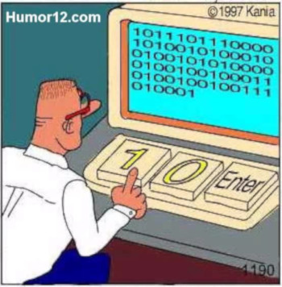
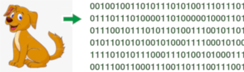

Sistemas de codificación de la información
El ordenador sólo entiende 0's y 1's, por lo que toda la información que deseemos trasladarle deberá ser antes codificada a binario.

Cuando pulsamos la tecla a minúscula
se genera la secuencia 0110 0001
Código binario
Al sistema de codificación que utiliza sólo dos símbolos para representar la información se denomina binario.

A ➔ 0100 0001
Cualquier carácter del teclado tiene un código numérico asociado, ese número se convierte al sistema de numeración binaria para ser almacenado en la memoria.
Por ejemplo, si pulsamos la tecla A mayúscula, en alguna celda de memoria se almacena el número 65, que en binario es: 0100 0001.
¿qué es un sistemas de numeración?
Un sistema de numeración es un "método para contar".
Se utiliza para codifcar cantidades, asignando
ciertos símbolos a esas cantidades.
| Sistema de numeración | codificación |
|---|---|
| decimal | 65 (6*10+5) |
| romana | LXV (50+10+5) |
| china | 六十五 (6*10+5) |
| binaria | 0100 0001 (26+20) |
| hexadecimal | 41 (4*16+1) |
Sistemas de codificación empleados en informática
Por imposición del hardware, todo debe ser convertido a binario.
1. Sistemas de codificación numérica
El binario es el único sistema de numeración que maneja el ordenador. A nosotros nos resulta muy difícil interpretar largas cadenas de 0's y 1's, así que a menudo se manejan otros sistemas de numeración que tienen una transcripción inmediata a binario: el octal y el hexadecimal.
usado en ...
- El binario es utilizado en subnetting (máscaras de subred: 255.255.224.0)
- El octal en permisos Unix/Linux (comando chmod)
- El hexadecimal en colores (formatos: #RRGGBB y #RGB)


2. Sistemas de codificación alfabética
Las letras no son números, así que para guardarlas en el ordenador necesitamos idear algún sistema que asigne a cada letra un número binario, p.ej. A → 01000001.
Hay muchísimos sistemas para codificar los caracteres, casi todos ellos son extensiones
del código ASCII, uno de los primeros empleados en
informática (1963), y que sólo puede representar el alfabeto inglés.
Los más empleados son las tablas ISO-8859 para diferentes
idiomas, y los sistemas UTF, que respresentan los caracteres de la
tabla Unicode.

ejercicio
Los ficheros que creaste en el ejercicio anterior, ¿están codificados en UTF-8?.
Si no es así, cambia la codificación a UTF-8.
Codifica alguno de ellos en UTF-16 ¿Cuánto disco ocupa?
Codifícalo en UTF-32 y mira ahora qué tamaño tiene.
Cofifíca alguno de ellos en ISO-8859-5, ó bien en ISO-8859-6, en ISO-8859-7 o en ISO-8859-8. Ábrelo y mira su contenido. ¿Qué ha pasado?
Codifícalo en ISO-8859-15. ¿Notas algún cambio?